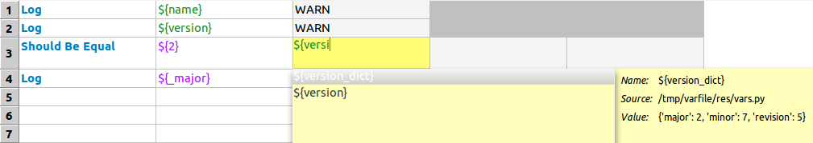

Variable file 用 Python 程式來定義變數，變數值可以是動態運算出來的，也可以是任意型態，彈性比 variable table 大上許多。
v1/res/variables.pyname = 'Robot Framework'
version = '2.7.5'
_major, _minor, _revision = [int(ver) for ver in version.split('.')]
version_dict = {'major': _major, 'minor': _minor, 'revision': _revision}v1/test.txt| *Setting* | *Value*
| Variables | %{RESOURCE_DIR}/variables.py
| *Test Case* | *Action* | *Argument*
| Test | Log | ${name} | WARN
| | Log | ${version} | WARN
| | Should Be Equal | ${2} | ${version_dict['major']}
| | Log | ${_major} | WARN執行結果：
$ pybot test.txt
==============================================================================
Test
==============================================================================
[ WARN ] Robot Framework
[ WARN ] 2.7.5
Test | FAIL |
Non-existing variable '${_major}'. 
底線（_）開頭的 attribute 不會被視為變數。
|
可以發現，global/module attribute 直接成為 test data 裡的變數。另外 RIDE 的自動完成也沒問題：

用 Python 程式來定義變數的好處是，可以在 test data 與 keyword 的內部實作之間共用一份變數的定義：
>>> import variables
>>> variables.name
'Robot Framework'
>>> variables.version
'2.7.5'
>>> variables.version_dict
{'major': 2, 'minor': 7, 'revision': 5}|
|
這一點也有助於在 Robot Framework 裡實現 UI Mapping。 |
在 Robot Framework 裡同時引入多個 variable file 時，可能發生變數命名重複的問題。可以利用 get_variables() 在 Robot Framework 跟 module 做為一個仲介－自動為變數名稱加上前綴，借以避開 Robot Framework 裡可能發生的命名衝突，但又不影響從 Python 程式直接存取這些變數的用法。
如果 module 有定義 get_variables()，Robot Framework 就會改從 get_variables() 取得變數 name/value 清單，也因此有機會從中動一些手腳。
v2/res/variables.pyimport sys, varutils
name = 'Robot Framework'
version = '2.7.5'
_major, _minor, _revision = [int(ver) for ver in version.split('.')]
version_dict = {'major': _major, 'minor': _minor, 'revision': _revision}
get_variables = varutils.get_variables(sys.modules[__name__])
把 get_variables() 的邏輯抽出，方便維護多個 variable file，只要提供 current module 即可。
|
v2/res/varutils.pyimport types
def get_variables(module, prefix=None):
def get_variables(prefix=prefix):
variables = {}
for name, value in module.__dict__.iteritems():  if name.startswith('_') or isinstance(value, (types.ModuleType, types.FunctionType)): continue
if prefix is not None: name = prefix + '_' + name
variables[name] = value
return variables
return get_variables
if name.startswith('_') or isinstance(value, (types.ModuleType, types.FunctionType)): continue
if prefix is not None: name = prefix + '_' + name
variables[name] = value
return variables
return get_variables
利用 inner function 的技巧，讓 get_variables() 的邏輯可以被重複使用，而且使用時還可以自訂前綴。
| |
| 從該 module 的 global symbol table 取得變數清單，再去掉多餘的部份。 |
v2/test.txt| *Setting* | *Value* |
| Variables | %{RESOURCE_DIR}/variables.py | tool
| *Test Case* | *Action* | *Argument*
| Test | Log | ${tool_name} | WARN
| | Log | ${tool_version} | WARN
| | Should Be Equal | ${2} | ${tool_version_dict['major']}
自訂前綴 tool，所以變數名稱前面都會冠上 tool_。
|
執行結果：
$ pybot test.txt
==============================================================================
Test
==============================================================================
[ WARN ] Robot Framework
[ WARN ] 2.7.5
Test | PASS |經過這個調整，variable file 支援前綴的功能，從 keyword 內部實作共用這些變數的部份則不受影響：
>>> import variables
>>> variables.version_dict
{'major': 2, 'minor': 7, 'revision': 5}
>>>
>>> variables.get_variables()
{'version_dict': {'major': 2, 'minor': 7, 'revision': 5}, 'ver': '5', 'name': 'Robot Framework', 'version': '2.7.5'}不知道 ver 這個變數是哪來的？